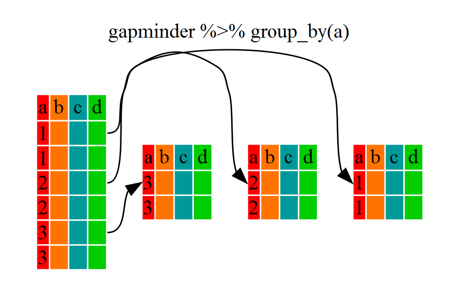

A lot of analysis time in many cases is spent on manipulating tabular data. The tidyverse provides a nice suite of packages for doing this.
The tidyverse is a suite of packages designed specifically to help with both these steps; some of which we will be introducing in this module. These are by no means the only packages out there for data wrangling but they are popular for their readable, straightforward syntax and sensible default behaviors.
An alternative for working quickly with very large datasets is the data.table package. It’s fast, but the syntax is not so nice.
Data frame manipulation using dplyr
Luckily, the dplyr package provides a number of very useful functions for manipulating data frames. These functions will save you time and hassle by reducing repetition, and will help to make your code more human-readable (trust me: your future self and others might thank you!)
Here we’re going to cover 6 of the most commonly used functions as well as using pipes (%>%) to combine them.
select()
filter()
group_by()
summarize()
mutate()
arrange()
dplyr::select
Imagine that we just received the gapminder dataset, but are only interested in a few variables in it. The select() function can help us to keep only the columns corresponding to variables we select.
library(dplyr)
Attaching package: 'dplyr'
The following objects are masked from 'package:stats':
filter, lag
The following objects are masked from 'package:base':
intersect, setdiff, setequal, union
But, as we will see, dplyr makes for much more readable, efficient code because of its pipe operator.
piping with dplyr
Above, we used what’s called “normal” grammar, but the strengths of dplyr lie in combining several functions using pipes.
In typical base R code, a simple operation might be written like:
# NOT runcupcakes <-bake(pour(mix(ingredients)))
A computer has no trouble understanding this and your cupcakes will be made just fine but a person has to read right to left to understand the order of operations - the opposite of how most western languages are read - making it harder to understand what is being done!
To be more readable without pipes, we might break up this code into intermediate objects…
# NOT runbatter <-mix(ingredients)muffin_tin <-pour(batter)cupcakes <-bake(muffin_tin)
but this can clutter our environment with a lot of variables that aren’t very useful to us, and often are named very similar things (e.g. step, step1, step2…) which can lead to confusion and bugs.
Enter the pipe…
The pipe makes it easier to read code because it lays out the operations left to right so each line can be read like a line of a recipe for the perfect data frame!
Pipes take the input on the left side of the |> symbol and pass it in as the first argument to the function on the right side.
With pipes, our cupcake example might be written like:
cupcakes <- ingredients |>mix() |>pour() |>bake()
select & Pipe (|>)
Let’s repeat what we did above with the gapminder dataset using pipes:
First, we summon the gapminder data frame and pass it on to the next step using the pipe symbol |>. The second step is the select() function. In this case we don’t specify which data object we use in the call to select() since we’ve piped it in.
Note that lack of quotations around the column names. This is called “non-standard evaluation” and is used a lot in the tidyverse (including in ggplot).
dplyr::filter
Now let’s say we’re only interested in African countries. We can combine select and filter to select only the observations where continent is Africa.
As with last time, first we pass the gapminder data frame to the filter() function, then we pass the filtered version of the gapminder data frame to the select() function.
Note: The order of operations is important in this case. If we used ‘select’ first, filter would not be able to find the variable continent since we would have removed it in the previous step.
dplyr calculations across groups: split-apply-combine
A common task you’ll encounter when working with data is running calculations on different groups within the data. For instance, what if we wanted to calculate the mean GDP per capita for each continent?
This general task is known as “split-apply-combine”:
We want to split our data into groups (in this case continents), apply some calculations on each group, then combine the results together afterwards.
dplyr::group_by
We’ve already seen how filter() can help us select observations that meet certain criteria (in the above: continent == "Europe"). More helpful, however, is the group_by() function, which will essentially use every unique criteria that we could have used in filter().
A grouped_df can be thought of as a list where each item in the list is a data.frame which contains only the rows that correspond to a particular value of one or more grouping variables (continent in our example).

dplyr::summarize
group_by() on its own is not particularly interesting; instead it’s generally used with summarize().
This will allow use to create new variable(s) by applying transformations to variables in each of the continent-specific data frames.
In other words, using the group_by() function, we split our original data frame into multiple pieces, which we then apply summary functions to (e.g., mean() or sd()) within summarize(). The output is a new data frame reduced in size, with one row per group.
# A tibble: 5 × 2
continent mean_gdpPercap
<fct> <dbl>
1 Africa 2194.
2 Americas 7136.
3 Asia 7902.
4 Europe 14469.
5 Oceania 18622.
That allowed us to calculate the mean gdpPercap for each continent. But it gets even better – the function group_by() allows us to group by multiple variables. Let’s group by year and continent.
`summarise()` has grouped output by 'continent'. You can override using the
`.groups` argument.
head(gdp_bycontinents_byyear)
# A tibble: 6 × 3
# Groups: continent [1]
continent year mean_gdpPercap
<fct> <int> <dbl>
1 Africa 1952 1253.
2 Africa 1957 1385.
3 Africa 1962 1598.
4 Africa 1967 2050.
5 Africa 1972 2340.
6 Africa 1977 2586.
You’re not limited to defining one new variable in summarize().
`summarise()` has grouped output by 'continent'. You can override using the
`.groups` argument.
head(gdp_pop_bycontinents_byyear)
# A tibble: 6 × 6
# Groups: continent [1]
continent year mean_gdpPercap sd_gdpPercap mean_pop sd_pop
<fct> <int> <dbl> <dbl> <dbl> <dbl>
1 Africa 1952 1253. 983. 4570010. 6317450.
2 Africa 1957 1385. 1135. 5093033. 7076042.
3 Africa 1962 1598. 1462. 5702247. 7957545.
4 Africa 1967 2050. 2848. 6447875. 8985505.
5 Africa 1972 2340. 3287. 7305376. 10130833.
6 Africa 1977 2586. 4142. 8328097. 11585184.
dplyr::mutate
What if we wanted to add these values to our original data frame instead of creating a new object? For this, we can use the mutate() function, which is similar to summarize() except it creates new variables in the same data frame that you pass into it.
# A tibble: 6 × 10
# Groups: continent, year [6]
country continent year lifeExp pop gdpPercap mean_gdpPercap sd_gdpPercap
<fct> <fct> <int> <dbl> <int> <dbl> <dbl> <dbl>
1 Afghanis… Asia 1952 28.8 8.43e6 779. 5195. 18635.
2 Afghanis… Asia 1957 30.3 9.24e6 821. 5788. 19507.
3 Afghanis… Asia 1962 32.0 1.03e7 853. 5729. 16416.
4 Afghanis… Asia 1967 34.0 1.15e7 836. 5971. 14063.
5 Afghanis… Asia 1972 36.1 1.31e7 740. 8187. 19088.
6 Afghanis… Asia 1977 38.4 1.49e7 786. 7791. 11816.
# ℹ 2 more variables: mean_pop <dbl>, sd_pop <dbl>
We can use also use mutate() to create new variables prior to (or even after) summarizing information. Note that mutate() does not need to operate on grouped data and it can do element-wise transformations.
`summarise()` has grouped output by 'continent'. You can override using the
`.groups` argument.
head(gdp_pop_bycontinents_byyear)
# A tibble: 6 × 8
# Groups: continent [1]
continent year mean_gdpPercap sd_gdpPercap mean_pop sd_pop mean_gdp_billion
<fct> <int> <dbl> <dbl> <dbl> <dbl> <dbl>
1 Africa 1952 1253. 983. 4570010. 6.32e6 5.99
2 Africa 1957 1385. 1135. 5093033. 7.08e6 7.36
3 Africa 1962 1598. 1462. 5702247. 7.96e6 8.78
4 Africa 1967 2050. 2848. 6447875. 8.99e6 11.4
5 Africa 1972 2340. 3287. 7305376. 1.01e7 15.1
6 Africa 1977 2586. 4142. 8328097. 1.16e7 18.7
# ℹ 1 more variable: sd_gdp_billion <dbl>
mutate vs. summarize
It can be confusing to decide whether to use mutate or summarize. The key distinction is whether you want the output to have one row for each group or one row for each row in the original data frame:
mutate: creates new columns with as many rows as the original data frame
summarize: creates a data frame with as many rows as groups
Note that if you use an aggregation function such as mean() within mutate() without using groupby(), you’ll simply do the summary over all the rows of the input data frame.
And if you use an aggregation function such as mean() within summarize() without using groupby(), you’ll simply create an output data frame with one row (i.e., the whole input data frame is a single group).
dplyr::arrange
As a last step, let’s say we want to sort the rows in our data frame according to values in a certain column. We can use the arrange() function to do this. For instance, let’s organize our rows by year (recent first), and then by continent.
Because continent and year are not variables our current environment! dplyr does some manipulation of language objects behind the scenes to save us from typing the quotes.
This is fine if you have a data analysis workflow but if you want to write a function that, for example, selects an arbitrary set of columns, you’ll run into trouble.
## here's a helper function that computes the mean of a variable, stratifying by a grouping variablegrouped_mean <-function(data, group_var, summary_var) { data |>group_by(group_var) |>summarise(mean =mean(summary_var))}gapminder |>grouped_mean(continent, lifeExp)gapminder |>grouped_mean('continent', 'lifeExp')
See the rlang (or wrapr) package for how one can deal with this problem in this context of using functions.
Tidying data
Even before we conduct analysis or calculations, we need to put our data into the correct format. The goal here is to rearrange a messy dataset into one that is tidy.
The two most important properties of tidy data are:
Each column is a variable.
Each row is an observation.
Tidy data is easier to work with, because you have a consistent way of referring to variables (as column names) and observations (as row indices). It then becomes easy to manipulate, visualize, and model.
Tabular datasets can be arranged in many ways. For instance, consider the data below. Each data set displays information on heart rate observed in individuals across 3 different time periods. But the data are organized differently in each table.
We often refer to these different structures as “long” vs. “wide” formats. In the “long” format, you usually have 1 column for the observed variable and the other columns are ID variables.
Question
Which of the ‘wide’ and ‘long’ objects do you prefer in terms of how the heartrate ‘data’ are formatted?
Answer
The first data frame (the “wide” one) would not be considered tidy because values (i.e., heartrate) are spread across multiple columns.
For the “wide” format each row is often a site/subject/patient and you have multiple observation variables containing the same type of data. These can be either repeated observations over time, or observation of multiple variables (or a mix of both). In the above case, we had the same kind of data (heart rate) entered across 3 different columns, corresponding to three different time periods.
You may find data input may be simpler and some programs/functions may prefer the “wide” format. However, many of R’s functions (particularly in the tidyverse) have been designed assuming you have “long” format data.
Tidying the Gapminder data
Lets look at the structure of our original gapminder data frame:
head(gapminder)
# A tibble: 6 × 6
country continent year lifeExp pop gdpPercap
<fct> <fct> <int> <dbl> <int> <dbl>
1 Afghanistan Asia 1952 28.8 8425333 779.
2 Afghanistan Asia 1957 30.3 9240934 821.
3 Afghanistan Asia 1962 32.0 10267083 853.
4 Afghanistan Asia 1967 34.0 11537966 836.
5 Afghanistan Asia 1972 36.1 13079460 740.
6 Afghanistan Asia 1977 38.4 14880372 786.
Question: Is this data frame wide or long?
Answer: This data frame is somewhere in between the purely ‘long’ and ‘wide’ formats. We have 3 “ID variables” (continent, country, year) and 3 “Observation variables” (pop, lifeExp, gdpPercap).
Despite not having ALL observations in 1 column, this intermediate format makes sense given that all 3 observation variables have different units. As we have seen, many of the functions in R are often vector based, and you usually do not want to do mathematical operations on values with different units.
On the other hand, there are some instances in which a purely long or wide format is ideal (e.g. plotting). Likewise, sometimes you’ll get data on your desk that is poorly organized, and you’ll need to reshape it.
tidyr::pivot_longer
The tidyr package will help you efficiently transform your data regardless of original format.
Until now, we’ve been using the nicely formatted original gapminder data set. This data set is not quite wide and not quite long – it’s something in the middle, but “real” data (i.e., our own research data) will never be so well organized. Here let’s start with the wide format version of the gapminder data set.
The first step towards getting our nice intermediate data format is to first convert from the wide to the long format. The function pivot_longer() will ‘gather’ the observation variables into a single variable. This is sometimes called “melting” your data, because it melts the table from wide to long. Those data will be melted into two variables: one for the variable names, and the other for the variable values.
# A tibble: 6 × 4
continent country name value
<chr> <chr> <chr> <dbl>
1 Africa Algeria gdpPercap_1952 2449.
2 Africa Algeria gdpPercap_1957 3014.
3 Africa Algeria gdpPercap_1962 2551.
4 Africa Algeria gdpPercap_1967 3247.
5 Africa Algeria gdpPercap_1972 4183.
6 Africa Algeria gdpPercap_1977 4910.
Formerly one used the function gather to do this, but many people found it not to be intuitive to use.
tidyr::select
If there are a lot of columns or they’re named in a consistent pattern, we might not want to select them using the column numbers. It’d be easier to use some information contained in the names themselves. We can select variables using:
variable indices
variable names (without quotes)
x:z to select all variables between x and z
-y to exclude y
starts_with(x, ignore.case = TRUE): all names that starts with x
ends_with(x, ignore.case = TRUE): all names that ends with x
contains(x, ignore.case = TRUE): all names that contain x
See the select() function in dplyr for more options.
For instance, here we do the same gather operation with (1) the starts_with function, and (2) the - operator:
# with the starts_with() functiongap_long <- gap_wide |>pivot_longer(c(starts_with('pop'), starts_with('lifeExp'), starts_with('gdpPercap')))head(gap_long)
# A tibble: 6 × 4
continent country name value
<chr> <chr> <chr> <dbl>
1 Africa Algeria pop_1952 9279525
2 Africa Algeria pop_1957 10270856
3 Africa Algeria pop_1962 11000948
4 Africa Algeria pop_1967 12760499
5 Africa Algeria pop_1972 14760787
6 Africa Algeria pop_1977 17152804
# with the - operatorgap_long <- gap_wide |>pivot_longer(c(-continent, -country))head(gap_long)
# A tibble: 6 × 4
continent country name value
<chr> <chr> <chr> <dbl>
1 Africa Algeria gdpPercap_1952 2449.
2 Africa Algeria gdpPercap_1957 3014.
3 Africa Algeria gdpPercap_1962 2551.
4 Africa Algeria gdpPercap_1967 3247.
5 Africa Algeria gdpPercap_1972 4183.
6 Africa Algeria gdpPercap_1977 4910.
However you choose to do it, notice that the output collapses all of the measure variables into two columns: one containing new ID variable, the other containing the observation value for that row.
tidyr::separate
You’ll notice that in our long dataset, name actually contains 2 pieces of information, the observation type (pop, lifeExp, or gdpPercap) and the year.
We can use the separate() function to split the character strings into multiple variables:
gap_long_sep <- gap_long |>separate(name, into =c('obs_type','year'), sep ="_") |>mutate(year =as.integer(year))head(gap_long_sep)
# A tibble: 6 × 5
continent country obs_type year value
<chr> <chr> <chr> <int> <dbl>
1 Africa Algeria gdpPercap 1952 2449.
2 Africa Algeria gdpPercap 1957 3014.
3 Africa Algeria gdpPercap 1962 2551.
4 Africa Algeria gdpPercap 1967 3247.
5 Africa Algeria gdpPercap 1972 4183.
6 Africa Algeria gdpPercap 1977 4910.
If you didn’t use tidyr to do this, you’d have to use the strsplit function and use multiple lines of code to replace the column in gap_long with two new columns. This solution is much cleaner.
tidyr::pivot_wider
The opposite of pivot_longer() is pivot_wider(). It spreads our observation variables back out to make a wider table. We can use this function to spread our gap_long() to the original “medium” format.
The data.table package provides a lot of functionality for fast manipulation of datasets in memory. data.table can do the standard SQL/dplyr operations such as indexing, merges/joins, assignment, grouping, etc. Plus data.table objects are data frames (i.e., they inherit from data frames) so they are compatible with R code that uses data frames.
If you’ve got enough memory, data.table can be effective with pretty large datasets (e.g., 10s of gigabytes).
Let’s read in a moderate size CSV with airline departure delay information.
library(data.table, quietly =TRUE)
Attaching package: 'data.table'
The following object is masked _by_ '.GlobalEnv':
indices
The following objects are masked from 'package:dplyr':
between, first, last
system.time(air <-fread(file.path('..', 'data', 'airline.csv'))) # 0.1 sec.
user system elapsed
0.490 0.025 0.221
We’ll compare the time for reading to read.csv and readr::read_csv.
system.time(air <-read.csv(file.path('..', 'data', 'airline.csv'),colClasses = col_types)) # 1.5 sec.
user system elapsed
1.475 0.009 1.485
system.time(air <- readr::read_csv(file.path('..', 'data', 'airline.csv'),col_types ="iiiiiiiiciciiiiicciiiiciiiiii")) # 0.9 sec.
user system elapsed
3.040 0.145 1.049
It doesn’t make much difference for that small-ish (50 MB) file, but fread should be fast for much larger files, including reading from zipped files or online files.
An important area for efficiency is to use an index, which can improve lookup speed dramatically. For this small dataset, everyting is fast already, so it’s not a good example.
air <-fread(file.path('..', 'data', 'airline.csv'))## Subset without an indexsystem.time(sub <- air[Dest =="BOS"])
user system elapsed
0.023 0.000 0.013
## Now set index and subsetsystem.time(setindex(air, Dest))
data.table has a lot of functionality and can be used to do a variety of sophisticated queries and manipulations (including aggregation operations), but it has its own somewhat involved syntax and concepts. The above just scratches the surface of what you can do with it.
Using dplyr syntax with data.table in R
Rather than learning the data.table syntax, one can also use dplyr syntax with data.table objects.
We can use dplyr syntax directly with data table objects, but the efficiency may not be what you want.
air <-fread(file.path('..', 'data', 'airline.csv'))system.time(result <- air[ , .(meanDelayByDest =mean(DepDelay, na.rm =TRUE)), by = Dest]) # 0.008 sec.
user system elapsed
0.036 0.000 0.010
system.time(result <- air |>group_by(Dest) |>summarize(meanDepDelay =mean(DepDelay))) # 0.019 sec.
user system elapsed
0.013 0.000 0.013
Instead, one can also use dtplyr to set use a data table as a back end for dplyr manipulations. Using lazy_dt allows dtplyr to do some optimization as it generates the translation from dplyr syntax to data table syntax, though this simple example doesn’t illustrate the usefulness of that (and using system.time for fine differentiation of timing is not generally a good idea).
Finally the tidytable package (not shown) also allows you to use dplyr syntax as well as other tidyverse syntax, such as tidyr functions.
Working with data on disk
In some cases you may not have enough memory to use tools that bring all the data into memory in R.
Some alternatives include:
DuckDB (or SQLite) databases, accessed from R
Using Apache Arrow via the arrow package
Or you may need to move to another language, such as using Dask in Python, or database/data lake functionality provided by clould providers.
Breakout
dplyr
Use dplyr to create a data frame containing the median lifeExp for each continent
Use dplyr to add a column to the gapminder dataset that contains the total population of the continent of each observation in a given year. For example, if the first observation is Afghanistan in 1952, the new column would contain the population of Asia in 1952.
Use dplyr to add a column called gdpPercap_diff that contains the difference between the observation’s gdpPercap and the mean gdpPercap of the continent in that year. Arrange the data frame by the column you just created, in descending order (so that the relatively richest country/years are listed first)
tidyr
Subset the results from question #3 to select only the country, year, and gdpPercap_diff columns. Use tidyr put it in wide format so that countries are rows and years are columns.
Hint: you’ll probably see a message about a missing grouping variable. If you don’t want continent included, you can pass the output of problem 3 through ungroup() to get rid of the continent information.
data.table
Compare timing of some operations on the airline dataset when using dtplyr with lazy_air versus directly applying dplyr syntax to the airdata.table.
Source Code
---title: "Data Wrangling (Tidyverse and data.table)"format: html: theme: cosmo css: ../assets/styles.css toc: true code-copy: true code-block-bg: true code-block-border-left: "#31BAE9" code-tools: trueexecute: freeze: auto---```{r chunksetup}#| include: false# include any code here you don't want to show up in the document,# e.g. package and dataset loadinglibrary(tidyr)library(ggplot2)library(gapminder)```# OverviewA lot of analysis time in many cases is spent on manipulating tabular data. The tidyverse provides a nice suite of packages for doing this.The [`tidyverse`](https://www.tidyverse.org/) is a suite of packages designed specifically to help with both these steps; some of which we will be introducing in this module. These are by no means the only packages out there for data wrangling but they are popular for their readable, straightforward syntax and sensible default behaviors.An alternative for working quickly with very large datasets is the `data.table` package. It's fast, but the syntax is not so nice.# Data frame manipulation using `dplyr`Luckily, the [`dplyr`](https://cran.r-project.org/web/packages/dplyr/dplyr.pdf) package provides a number of very useful functions for manipulating data frames. These functions will save you time and hassle by reducing repetition, and will help to make your code more human-readable (trust me: your future self and others might thank you!)Here we're going to cover 6 of the most commonly used functions as well as using pipes (`%>%`) to combine them.1. `select()`2. `filter()`3. `group_by()`4. `summarize()`5. `mutate()`6. `arrange()`# `dplyr::select`Imagine that we just received the gapminder dataset, but are only interested in a few variables in it. The `select()` function can help us to keep only the columns corresponding to variables we select.```{r}library(dplyr)year_country_gdp_dplyr <-select(gapminder, year, country, gdpPercap)head(year_country_gdp_dplyr)```We see the new dataframe only contains the year, country and gdpPercap. This is equivalent to the base R subsetting operator:```{r}year_country_gdp_base <- gapminder[ , c("year", "country", "gdpPercap")]head(year_country_gdp_base)```But, as we will see, `dplyr` makes for much more readable, efficient code because of its *pipe* operator.# piping with `dplyr`Above, we used what's called "normal" grammar, but the strengths of `dplyr` lie in combining several functions using *pipes*.In typical base R code, a simple operation might be written like: ```{r eval=F}# NOT runcupcakes <- bake(pour(mix(ingredients)))```A computer has no trouble understanding this and your cupcakes will be made justfine but a person has to read right to left to understand the order of operations - the opposite of how most western languages are read - making it harder to understand what is being done! To be more readable without pipes, we might break up this code into intermediate objects... ```{r}#| eval: false# NOT runbatter <-mix(ingredients)muffin_tin <-pour(batter)cupcakes <-bake(muffin_tin)```but this can clutter our environment with a lot of variables that aren't very useful to us, and often are named very similar things (e.g. step, step1, step2...)which can lead to confusion and bugs.### Enter the pipe... The *pipe* makes it easier to read code because it lays out the operations left to right so each line can be read like a line of a recipe for the perfect data frame! Pipes take the input on the left side of the `|>` symbol and pass it in as the first argument to the function on the right side.With pipes, our cupcake example might be written like:```{r}#| eval: falsecupcakes <- ingredients |>mix() |>pour() |>bake()```# `select` & Pipe (`|>`)Let's repeat what we did above with the gapminder dataset using pipes:```{r}year_country_gdp <- gapminder |>select(year, country, gdpPercap)```First, we summon the gapminder data frame and pass it on to the next step using the pipe symbol `|>`.The second step is the `select()` function.In this case we don't specify which data object we use in the call to `select()` since we've piped it in.Note that lack of quotations around the column names. This is called "non-standard evaluation" and is used a lot in the tidyverse (including in ggplot).# `dplyr::filter`Now let's say we're only interested in African countries. We can combine `select` and `filter` to select only the observations where `continent` is `Africa`.```{r}year_country_gdp_africa <- gapminder |>filter(continent =="Africa") |>select(year,country,gdpPercap)```As with last time, first we pass the gapminder data frame to the `filter()` function, then we pass the filtered version of the gapminder data frame to the `select()` function.**Note:** The order of operations is important in this case. If we used 'select' first, filter would not be able to find the variable `continent` since we would have removed it in the previous step.# `dplyr` calculations across groups: split-apply-combineA common task you'll encounter when working with data is running calculations on different groups within the data. For instance, what if we wanted to calculate the mean GDP per capita for each continent?This general task is known as "split-apply-combine":We want to *split* our data into groups (in this case continents), *apply* some calculations on each group, then *combine* the results together afterwards.# `dplyr::group_by`We've already seen how `filter()` can help us select observations that meet certain criteria (in the above: `continent == "Europe"`). More helpful, however, is the `group_by()` function, which will essentially use every unique criteria that we could have used in `filter()`.A `grouped_df` can be thought of as a `list` where each item in the `list` is a `data.frame` which contains only the rows that correspond to a particular value of one or more grouping variables (`continent` in our example).# `dplyr::summarize``group_by()` on its own is not particularly interesting; instead it's generally used with `summarize()`.This will allow use to create new variable(s) by applying transformations to variables in each of the continent-specific data frames.In other words, using the `group_by()` function, we split our original data frame into multiple pieces, which we then apply summary functions to (e.g., `mean()` or `sd()`) within `summarize()`.The output is a new data frame reduced in size, with one row per group.```{r}gdp_bycontinents <- gapminder |>group_by(continent) |>summarize(mean_gdpPercap =mean(gdpPercap))head(gdp_bycontinents)```That allowed us to calculate the mean gdpPercap for each continent. But it gets even better -- the function `group_by()` allows us to group by multiple variables. Let's group by `year` and `continent`.```{r}gdp_bycontinents_byyear <- gapminder |>group_by(continent, year) |>summarize(mean_gdpPercap =mean(gdpPercap))head(gdp_bycontinents_byyear)```You're not limited to defining one new variable in `summarize()`.```{r}gdp_pop_bycontinents_byyear <- gapminder |>group_by(continent, year) |>summarize(mean_gdpPercap =mean(gdpPercap),sd_gdpPercap =sd(gdpPercap),mean_pop =mean(pop),sd_pop =sd(pop))head(gdp_pop_bycontinents_byyear)```# `dplyr::mutate`What if we wanted to add these values to our original data frame instead of creating a new object? For this, we can use the `mutate()` function, which is similar to `summarize()` except it creates new variables in the same data frame that you pass into it.```{r}gap_with_extra_vars <- gapminder |>group_by(continent, year) |>mutate(mean_gdpPercap =mean(gdpPercap),sd_gdpPercap =sd(gdpPercap),mean_pop =mean(pop),sd_pop =sd(pop))head(gap_with_extra_vars)```We can use also use `mutate()` to create new variables prior to (or even after) summarizing information. Note that `mutate()` does not need to operate on grouped data and it can do element-wise transformations.```{r}gdp_pop_bycontinents_byyear <- gapminder |>mutate(gdp_billion = gdpPercap*pop/10^9) |>group_by(continent, year) |>summarize(mean_gdpPercap =mean(gdpPercap),sd_gdpPercap =sd(gdpPercap),mean_pop =mean(pop),sd_pop =sd(pop),mean_gdp_billion =mean(gdp_billion),sd_gdp_billion =sd(gdp_billion))head(gdp_pop_bycontinents_byyear)```# `mutate` vs. `summarize`It can be confusing to decide whether to use `mutate` or `summarize`. The key distinction is whether you want the output to have one row for each group or one row for each row in the original data frame: - `mutate`: creates new columns with as many rows as the original data frame - `summarize`: creates a data frame with as many rows as groupsNote that if you use an aggregation function such as `mean()` within `mutate()` without using `groupby()`, you'll simply do the summary over all the rows of the input data frame.And if you use an aggregation function such as `mean()` within `summarize()` without using `groupby()`, you'll simply create an output data frame with one row (i.e., the whole input data frame is a single group).# `dplyr::arrange`As a last step, let's say we want to sort the rows in our data frame according to values in a certain column. We can use the `arrange()` function to do this. For instance, let's organize our rows by `year` (recent first), and then by `continent`.```{r}gap_with_extra_vars <- gapminder |>group_by(continent, year) |>mutate(mean_gdpPercap =mean(gdpPercap),sd_gdpPercap =sd(gdpPercap),mean_pop =mean(pop),sd_pop =sd(pop)) |>arrange(desc(year), continent) # `desc()` = descending orderhead(gap_with_extra_vars)```# `dplyr` take-aways* Human readable: the function names describe the action being done* Piping: chain functions in a step-by-step way, rather than nesting# dplyr and "non-standard evaluation"You may run across the term "non-standard evaluation". The use of data frame variables without quotes around them is an example of this.Why is this strange?```{r}#| eval: falsegapminder |>select(continent, year) |>tail()```Compare it to:```{r}#| eval: falsegapminder[ , c('continent', 'year')]gapminder[ , 'continent']```Because `continent` and `year` are not variables our current environment! dplyr does some manipulation of language objects behind the scenes to save us from typing the quotes.This is fine if you have a data analysis workflow but if you want to write a function that, for example, selects an arbitrary set of columns, you'll run into trouble.```{r}#| eval: false## here's a helper function that computes the mean of a variable, stratifying by a grouping variablegrouped_mean <-function(data, group_var, summary_var) { data |>group_by(group_var) |>summarise(mean =mean(summary_var))}gapminder |>grouped_mean(continent, lifeExp)gapminder |>grouped_mean('continent', 'lifeExp')```See the `rlang` (or `wrapr`) package for how one can deal with this problem in this context of using functions. # Tidying dataEven before we conduct analysis or calculations, we need to put our data into the correct format. The goal here is to rearrange a messy dataset into one that is **tidy**.The two most important properties of tidy data are:1) Each column is a variable.2) Each row is an observation.Tidy data is easier to work with, because you have a consistent way of referring to variables (as column names) and observations (as row indices). It then becomes easy to manipulate, visualize, and model.For more on the concept of *tidy* data, you can read [Hadley Wickham's paper](http://vita.had.co.nz/papers/tidy-data.html).# Wide vs. long formatsTabular datasets can be arranged in many ways. For instance, consider the data below. Each data set displays information on heart rate observed in individuals across 3 different time periods. But the data are organized differently in each table.```{r}wide <-data.frame(name =c("Wilbur", "Petunia", "Gregory"),time1 =c(67, 80, 64),time2 =c(56, 90, 50),time3 =c(70, 67, 101))widelong <-data.frame(name =c("Wilbur", "Petunia", "Gregory", "Wilbur", "Petunia", "Gregory", "Wilbur", "Petunia", "Gregory"),time =c(1, 1, 1, 2, 2, 2, 3, 3, 3),heartrate =c(67, 80, 64, 56, 90, 50, 70, 67, 10))long```We often refer to these different structures as "long" vs. "wide" formats. In the "long" format, you usually have 1 column for the observed variable and the other columns are ID variables.::: {.callout-tip title="Question"}Which of the 'wide' and 'long' objects do you prefer in terms of how the heartrate 'data' are formatted?:::::: {.callout-tip title="Answer" collapse="true"}The first data frame (the "wide" one) would not be considered *tidy* because values (i.e., heartrate) are spread across multiple columns.:::For the "wide" format each row is often a site/subject/patient and you have multiple observation variables containing the same type of data. These can be either repeated observations over time, or observation of multiple variables (or a mix of both). In the above case, we had the same kind of data (heart rate) entered across 3 different columns, corresponding to three different time periods.You may find data input may be simpler and some programs/functions may prefer the "wide" format. However, many of R’s functions (particularly in the tidyverse) have been designed assuming you have "long" format data.# Tidying the Gapminder dataLets look at the structure of our original gapminder data frame:```{r}head(gapminder)```**Question**: Is this data frame **wide** or **long**?**Answer**: This data frame is somewhere in between the purely 'long' and 'wide' formats. We have 3 "ID variables" (`continent`, `country`, `year`) and 3 "Observation variables" (`pop`, `lifeExp`, `gdpPercap`).Despite not having ALL observations in 1 column, this intermediate format makes sense given that all 3 observation variables have different units. As we have seen, many of the functions in R are often vector based, and you usually do not want to do mathematical operations on values with different units.On the other hand, there are some instances in which a purely long or wide format is ideal (e.g. plotting). Likewise, sometimes you'll get data on your desk that is poorly organized, and you'll need to **reshape** it.# `tidyr::pivot_longer`The `tidyr` package will help you efficiently transform your data regardless of original format.Until now, we've been using the nicely formatted original gapminder data set. This data set is not quite wide and not quite long -- it's something in the middle, but "real" data (i.e., our own research data) will never be so well organized. Here let's start with the wide format version of the gapminder data set.```{r}gap_wide <-read.csv(file.path("..", "data", "gapminder_wide.csv"))head(gap_wide)```The first step towards getting our nice intermediate data format is to first convert from the wide to the long format.The function `pivot_longer()` will 'gather' the observation variables into a single variable. This is sometimes called "melting" your data, because it melts the table from wide to long. Those data will be melted into two variables: one for the variable names, and the other for the variable values.```{r}library(tidyr)gap_long <- gap_wide |>pivot_longer(gdpPercap_1952:pop_2007)head(gap_long)```Formerly one used the function `gather` to do this, but many people found it not to be intuitive to use.# `tidyr::select`If there are a lot of columns or they're named in a consistent pattern, we might not want to select them using the column numbers.It'd be easier to use some information contained in the names themselves.We can select variables using:* variable indices* variable names (without quotes)* `x:z` to select all variables between x and z* `-y` to *exclude* y* `starts_with(x, ignore.case = TRUE)`: all names that starts with `x`* `ends_with(x, ignore.case = TRUE)`: all names that ends with `x`* `contains(x, ignore.case = TRUE)`: all names that contain `x`See the `select()` function in `dplyr` for more options.For instance, here we do the same gather operation with (1) the `starts_with` function, and (2) the `-` operator:```{r}# with the starts_with() functiongap_long <- gap_wide |>pivot_longer(c(starts_with('pop'), starts_with('lifeExp'), starts_with('gdpPercap')))head(gap_long)# with the - operatorgap_long <- gap_wide |>pivot_longer(c(-continent, -country))head(gap_long)```However you choose to do it, notice that the output collapses all of the measure variables into two columns: one containing new ID variable, the other containing the observation value for that row.# `tidyr::separate`You'll notice that in our long dataset, `name` actually contains 2 pieces of information, the observation type (`pop`, `lifeExp`, or `gdpPercap`) and the `year`.We can use the `separate()` function to split the character strings into multiple variables:```{r}gap_long_sep <- gap_long |>separate(name, into =c('obs_type','year'), sep ="_") |>mutate(year =as.integer(year))head(gap_long_sep)```If you didn't use `tidyr` to do this, you'd have to use the `strsplit` function and use multiple lines of code to replace the column in `gap_long` with two new columns. This solution is much cleaner.# `tidyr::pivot_wider`The opposite of `pivot_longer()` is `pivot_wider()`. It spreads our observation variables back out to make a wider table. We can use this function to spread our `gap_long()` to the original "medium" format.```{r}gap_medium <- gap_long_sep |>pivot_wider(names_from = obs_type, values_from = value)head(gap_medium)```Formerly one used the function `spread` to do this, but many people found it not to be intuitive to use.All we need is some quick fixes to make this dataset identical to the original `gapminder` dataset:```{r}head(gapminder)# rearrange columnsgap_medium <- gap_medium[,names(gapminder)]head(gap_medium)# arrange by country, continent, and yeargap_medium <- gap_medium |>arrange(country, continent, year)head(gap_medium)```# Extra Resources (optional)`dplyr` and `tidyr` have many more functions to help you wrangle and manipulate your data. See the [Data Wrangling Cheat Sheet](https://www.rstudio.com/wp-content/uploads/2015/02/data-wrangling-cheatsheet.pdf) for more.Here are [some additional functions/verbs](https://www.r-bloggers.com/2022/07/eight-r-tidyverse-tips-for-everyday-data-engineering/?utm_source=phpList&utm_medium=email&utm_campaign=R-bloggers-daily&utm_content=HTML) for use with dplyr: There are some other useful packages in the [tidyverse](http://www.tidyverse.org):* `ggplot2` for plotting (We'll cover this in unit 5)* `readr` and `haven` for reading in data* `purrr` for working with lists and operations similar to the `lapply` family introduced in Module 4. * `stringr`, `lubridate`, `forcats` for manipulating strings, dates, and factors, respectively* many many more! Take a peak at the [tidyverse github page](https://github.com/tidyverse)...# data.table: introThe *data.table* package provides a lot of functionality for fast manipulation of datasets in memory. data.table can do the standard SQL/dplyr operations such as indexing, merges/joins, assignment, grouping, etc. Plus data.table objects are data frames (i.e., they inherit from data frames) so they are compatible with R code that uses data frames.If you've got enough memory, data.table can be effective with pretty large datasets (e.g., 10s of gigabytes).Let's read in a moderate size CSV with airline departure delay information.```{r}library(data.table, quietly =TRUE)system.time(air <-fread(file.path('..', 'data', 'airline.csv'))) # 0.1 sec.```We'll compare the time for reading to `read.csv` and `readr::read_csv`.```{r}col_types <-c("integer", "integer", "integer", "integer", "integer", "integer","integer", "integer", "character", "integer", "character","integer", "integer", "integer", "integer", "integer","character", "character", "integer", "integer", "integer", "integer","character", "integer", "integer", "integer","integer", "integer", "integer")system.time(air <-read.csv(file.path('..', 'data', 'airline.csv'))) # 5.6 sec.system.time(air <-read.csv(file.path('..', 'data', 'airline.csv'),colClasses = col_types)) # 1.5 sec.system.time(air <- readr::read_csv(file.path('..', 'data', 'airline.csv'),col_types ="iiiiiiiiciciiiiicciiiiciiiiii")) # 0.9 sec.```It doesn't make much difference for that small-ish (50 MB) file, but `fread` should be fast for much larger files, including reading from zipped files or online files.# data.table syntaxHere's some syntax examples:```{r}#| eval: false# Filter rows:air[Dest =="BOS"& DepDelay >100]# Select columns:air[ , c("Dest", "DepDelay")]# Mutate (create new columns):air[ , DepDelayHr := DepDelay /60]# Summarizeair[ , .(meanDelayByDest =mean(DepDelay, na.rm =TRUE)), by = Dest]# Chaining operations (ugly!):air[ , DepDelayHr := DepDelay /60][ , .(meanDelayByDest =mean(DepDelayHr, na.rm =TRUE)), by = Dest]# Join:air[another_dt, on ="keycolumn"]# Sort:air[order(Dest, -DepDelay)]```An important area for efficiency is to use an index, which can improve lookup speed dramatically. For this small dataset, everyting is fast already, so it's not a good example.```{r, index}air <- fread(file.path('..', 'data', 'airline.csv'))## Subset without an indexsystem.time(sub <- air[Dest == "BOS"]) ## Now set index and subsetsystem.time(setindex(air, Dest))system.time(sub2 <- air[Dest == "BOS"]) # essentially instantaneous```data.table has a lot of functionality and can be used to do a variety of sophisticated queries and manipulations (including aggregation operations), but it has its own somewhat involved syntax and concepts. The above just scratches the surface of what you can do with it. # Using dplyr syntax with data.table in RRather than learning the data.table syntax, one can also use dplyr syntax with data.table objects.We can use dplyr syntax directly with data table objects, but the efficiency may not be what you want.```{r, dtplusdplyr}air <- fread(file.path('..', 'data', 'airline.csv'))system.time(result <- air[ , .(meanDelayByDest = mean(DepDelay, na.rm = TRUE)), by = Dest]) # 0.008 sec.system.time(result <- air |> group_by(Dest) |> summarize(meanDepDelay = mean(DepDelay))) # 0.019 sec.```Instead, one can also use `dtplyr` to set use a data table as a back end for dplyr manipulations. Using `lazy_dt` allows dtplyr to do some optimization as it generates the translation from dplyr syntax to data table syntax, though this simple example doesn't illustrate the usefulness of that (and using `system.time` for fine differentiation of timing is not generally a good idea). ```{r, dtplyr}library(dtplyr)lazy_air <- lazy_dt(air)system.time(result <- lazy_air |> group_by(Dest) |> summarize(meanDepDelay = mean(DepDelay))) # 0.007```Finally the `tidytable` package (not shown) also allows you to use dplyr syntax as well as other tidyverse syntax, such as `tidyr` functions. # Working with data on diskIn some cases you may not have enough memory to use tools that bring all the data into memory in R.Some alternatives include:- DuckDB (or SQLite) databases, accessed from R- Using Apache Arrow via the `arrow` packageOr you may need to move to another language, such as using Dask in Python, or database/data lake functionality provided by clould providers.# Breakout### `dplyr`1. Use `dplyr` to create a data frame containing the median `lifeExp` for each continent2. Use `dplyr` to add a column to the gapminder dataset that contains the total population of the continent of each observation in a given year. For example, if the first observation is Afghanistan in 1952, the new column would contain the population of Asia in 1952.3. Use `dplyr` to add a column called `gdpPercap_diff` that contains the difference between the observation's `gdpPercap` and the mean `gdpPercap` of the continent in that year. Arrange the data frame by the column you just created, in descending order (so that the relatively richest country/years are listed first)### `tidyr`4. Subset the results from question #3 to select only the `country`, `year`, and `gdpPercap_diff` columns. Use tidyr put it in wide format so that countries are rows and years are columns.Hint: you'll probably see a message about a missing grouping variable. If you don't want continent included, you can pass the output of problem 3 through `ungroup()` to get rid of the continent information.### `data.table`5. Compare timing of some operations on the airline dataset when using `dtplyr` with `lazy_air` versus directly applying dplyr syntax to the `air``data.table`.